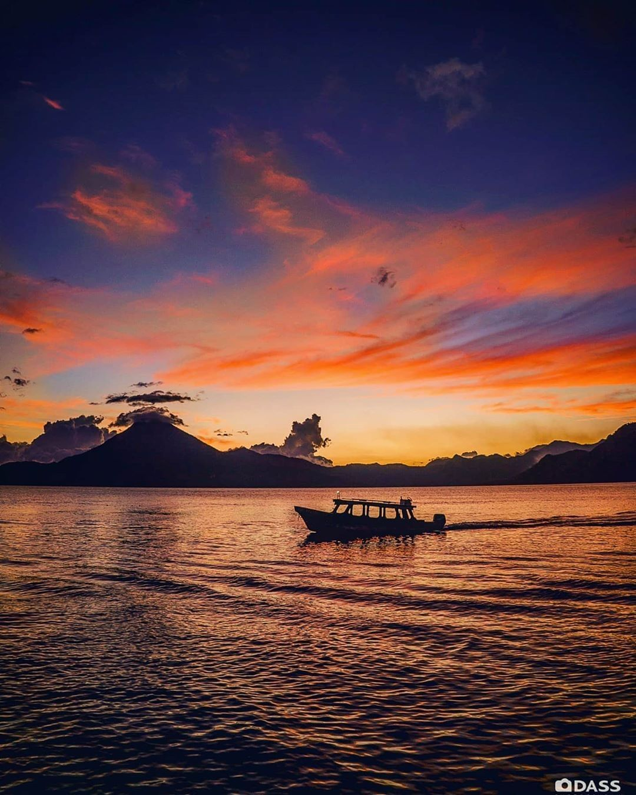

Lago de Atitlán
Considerado por muchos como el lago más bello del mundo, Atitlán es una joya natural rodeada por tres majestuosos volcanes: Atitlán, Tolimán y San Pedro. Sus aguas azules y cristalinas cambian de color a lo largo del día, creando un paisaje hipnótico.
Curiosidades fascinantes
- Un origen explosivo: El lago ocupa una caldera formada por una erupción volcánica masiva hace 84,000 años.
- Pueblos con identidad propia: Doce pueblos mayas, cada uno con su traje y dialecto, rodean el lago.
- La Atlántida Maya: Bajo sus aguas se encuentran las ruinas de Samabaj, un sitio arqueológico maya sumergido.
Un poco de historia
El lago fue un importante centro de la civilización maya Tz'utujil. Hoy, es un lugar donde las tradiciones ancestrales y la cultura viva maya prosperan en un entorno de increíble belleza natural.